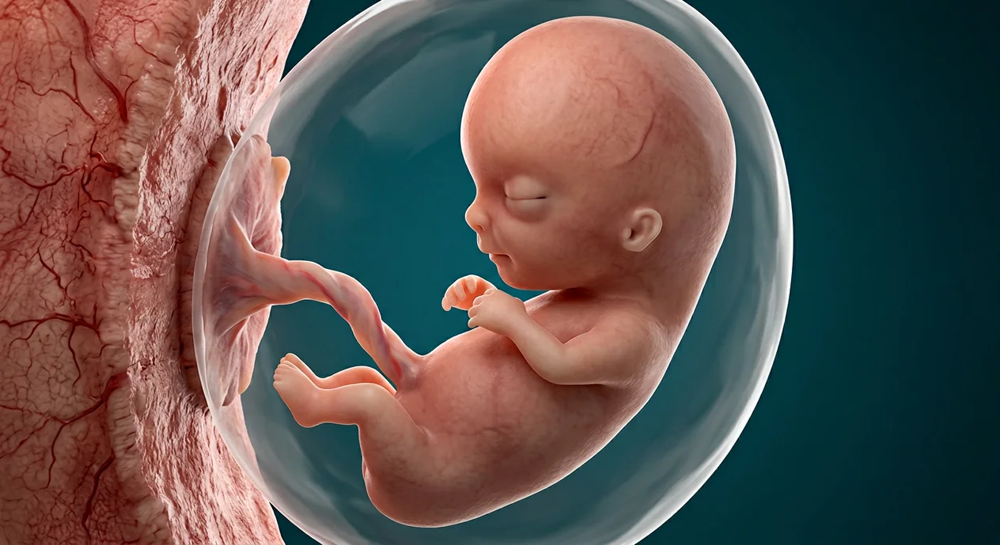

ORGAN → UNDER THE LENS
Neural folds and early germ layers
Tap to compare the organ region with a tissue-level teaching illustration.
Read about Embryonic disc ↓Follow gastrulation, ectoderm, mesoderm, endoderm, neural tube, somites, cardiac loop and limb buds through early organ formation.

Amniotic enclosureAfter implantation, the embryonic disc establishes ectoderm, mesoderm and endoderm during gastrulation. Neurulation and body folding organize an early body plan, while early heart, gut, somites and limb buds form. In standard embryology the embryonic period of major organ formation covers approximately weeks 3–8 after fertilization, roughly two weeks less than corresponding obstetric gestational age; exact morphology varies. From the following developmental period, the term fetus emphasizes growth and maturation. The image is a stylized single early-developing human and is NOT a week-accurate clinical scan, histology image, or a reliable depiction of any specific day; no unidentifiable microscopic parts receive pins.
These are educational cutaways, not literal magnifications of an organ pixel or laboratory slides. A ring marks the approximate tissue region; part-specific lines appear only where identifiable.
Tap to compare the organ region with a tissue-level teaching illustration.
Read about Embryonic disc ↓Sperm and egg are separate branches before fertilization. Obstetric gestational weeks are usually counted from the last menstrual period, roughly two weeks before conception. Digital labor-stage illustrations model separate moments, not clinical birth photographs or patient measurements.
Tap an image to enlarge and tap again to close. These are digital educational models, not microscope photos, measured ultrasounds, clinical birth images or exact developmental clocks.
Stylized model, not a week-specific specimen or diagnostic image.
DIGITAL embryonic section during neural folding, before completed closure; not a true histology slide or later mature brain.
These 1 structures describe anatomy related to the chapter’s regional illustration. Each entry separates location, function and a clinical point.
Amniotic membrane and fluid protect growing embryo as the sac expands.
What it doesProvides buffered environment for development.
Clinical connectionThis digital sac is not a sonographic measurement.
Picture context Stylized model, not a week-specific specimen or diagnostic image.
These 19 anatomy and development entries explain each stage without placing false pointers on an illustrative context plate.
Early embryo proper arises from organized epiblast-derived cell populations.
What it doesEstablishes spatial body plan.
Clinical connectionA generic three-dimensional render does not identify individual disc layers.
Picture context DIGITAL embryonic section during neural folding, before completed closure; not a true histology slide or later mature brain.
Transient caudal midline feature supports migration of cells in gastrulation.
What it doesOrganizes early layer formation.
Clinical connectionMicroscopic primitive streak is not visible on the later external model.
Picture context DIGITAL embryonic section during neural folding, before completed closure; not a true histology slide or later mature brain.
Cell movements establish three definitive germ layers.
What it doesOrganizes major tissue lineages.
Clinical connectionA drawing of later curved embryo cannot show the movement itself.
Picture context DIGITAL embryonic section during neural folding, before completed closure; not a true histology slide or later mature brain.
Outer germ layer contributes epidermis and nervous-system tissues.
What it doesForms key external covering and neural precursors.
Clinical connectionNot a complete map of individual organ fate on this image.
Picture context DIGITAL embryonic section during neural folding, before completed closure; not a true histology slide or later mature brain.
Middle germ layer contributes much muscle, bone, connective tissue and cardiovascular structures.
What it doesBuilds supporting and circulatory systems.
Clinical connectionLayer is not independently visible externally.
Picture context DIGITAL embryonic section during neural folding, before completed closure; not a true histology slide or later mature brain.
Inner germ layer contributes epithelial lining of digestive and respiratory tracts.
What it doesProvides internal epithelial tissue lineages.
Clinical connectionDo not mistake endoderm for the placenta.
Picture context DIGITAL embryonic section during neural folding, before completed closure; not a true histology slide or later mature brain.
Axial mesodermal structure influences neural and vertebral patterning.
What it doesProvides midline developmental signaling.
Clinical connectionThe tiny embryonic axis cannot be pinpointed on this model.
Picture context DIGITAL embryonic section during neural folding, before completed closure; not a true histology slide or later mature brain.
Ectodermal region thickens and folds during neurulation.
What it doesInitiates central nervous-system development.
Clinical connectionA clinical neural-tube defect is not diagnosable from a render.
Picture context DIGITAL embryonic section during neural folding, before completed closure; not a true histology slide or later mature brain.
Folded neural plate closes in stages along embryonic axis.
What it doesForms the brain and spinal cord primordium.
Clinical connectionFolate-related prevention advice belongs with a clinician, not this diagram. The close-up shows folds prior to completed tube closure.
Picture context DIGITAL embryonic section during neural folding, before completed closure; not a true histology slide or later mature brain.
Segmental paraxial mesoderm develops on both sides of neural tube.
What it doesContributes to axial skeleton, skeletal muscle and dermis.
Clinical connectionSomite number cannot be inferred from generic art.
Picture context DIGITAL embryonic section during neural folding, before completed closure; not a true histology slide or later mature brain.
Cardiogenic tissue assembles an early contractile tube that subsequently loops.
What it doesBegins embryonic circulation.
Clinical connectionA visible fetal heart shape is not shown at its microscopic initiation.
Picture context Stylized model, not a week-specific specimen or diagnostic image.
Early heart tube changes shape as later chamber architecture develops.
What it doesSets up future heart relationships.
Clinical connectionThe early loop is not a fully four-chambered heart.
Picture context Stylized model, not a week-specific specimen or diagnostic image.
Head, tail and lateral folds reshape disc into a three-dimensional body.
What it doesBrings internal tubes and body walls into position.
Clinical connectionThe image shows a later simplified result, not a motion video.
Picture context DIGITAL embryonic section during neural folding, before completed closure; not a true histology slide or later mature brain.
Endoderm-lined gut develops as body folds enclose part of yolk sac.
What it doesEstablishes alimentary tract primordium.
Clinical connectionAn external render cannot expose the gut tube.
Picture context DIGITAL embryonic section during neural folding, before completed closure; not a true histology slide or later mature brain.
Series of head-and-neck embryonic prominences arise in early weeks.
What it doesContribute to diverse craniofacial and neck structures.
Clinical connectionDo not count arches from a smooth digital face.
Picture context Stylized model, not a week-specific specimen or diagnostic image.
Upper and lower limb outgrowths develop during embryonic weeks.
What it doesProvide basis for future arm and leg structures.
Clinical connectionA drawn hand shape does not date an embryo exactly.
Picture context Stylized model, not a week-specific specimen or diagnostic image.
Neuroectodermal and surface ectodermal interactions initiate eye development.
What it doesStarts visual organ formation.
Clinical connectionA closed eyelid on a model is not proof of particular gestational week.
Picture context Stylized model, not a week-specific specimen or diagnostic image.
Early extraembryonic sac participates in developmental support and early blood formation.
What it doesProvides early embryonic and hematopoietic functions.
Clinical connectionHuman yolk sac is not a food-filled bird egg.
Picture context Stylized model, not a week-specific specimen or diagnostic image.
After primary embryonic organ plans are laid down, growth and maturation become prominent in fetal period.
What it doesSeparates organ formation from later growth emphasis.
Clinical connectionThe boundary is a developmental convention, not an instantaneous transformation.
Picture context Stylized model, not a week-specific specimen or diagnostic image.
Short answers grounded in the structures described above. Use the illustrated guide for anatomical context.
Gastrulation establishes ectoderm, mesoderm and endoderm. Together they contribute to later organs and tissues, though any one organ often draws from more than one layer.
It contributes to the brain and spinal cord. It forms after neural plate folding and closure; the microscopic folding process is not directly visible on the generic external development image.
A standard developmental convention describes much organ-plan formation during roughly weeks three through eight after fertilization. Obstetric gestational weeks counted from the LMP are usually about two weeks higher.
Head, tail and lateral folds transform the disc into a three-dimensional body and help position the primitive gut. The still digital plate shows a simplified later form, not actual folding in motion.
No. It is a stylized non-diagnostic model rather than a measured clinical image or week-specific specimen. Form and timing vary, so age cannot be determined from the rendering.
Follow these connected structures and body systems in the illustrated atlas.
 Placenta · maternal–fetal exchangeSeparate placenta chapter: chorionic villi, decidua, separated circulations, cord and membranes.↗
Placenta · maternal–fetal exchangeSeparate placenta chapter: chorionic villi, decidua, separated circulations, cord and membranes.↗ Fetus · growth & pregnancy trimestersFollow fetal growth, placenta, organs and first, second and third trimester landmarks without confusing pregnancy weeks and conception age.↗
Fetus · growth & pregnancy trimestersFollow fetal growth, placenta, organs and first, second and third trimester landmarks without confusing pregnancy weeks and conception age.↗ Uterus — layers & cavityThe womb in cross-section: endometrium, junctional zone, myometrium, cavity, isthmus and the key clinical boundaries.↗
Uterus — layers & cavityThe womb in cross-section: endometrium, junctional zone, myometrium, cavity, isthmus and the key clinical boundaries.↗ Female pelvis & perineumThe female pelvic floor in sagittal section: bladder and urethra, vagina and anteverted uterus, rectum behind — plus the ligaments and pouches that position them.↗
Female pelvis & perineumThe female pelvic floor in sagittal section: bladder and urethra, vagina and anteverted uterus, rectum behind — plus the ligaments and pouches that position them.↗General anatomy references and related source chapters for continued study. These links do not make the digital illustrations clinical images or certify every anatomical variant.
This educational page is not medical advice and has not undergone formal clinical peer review. Spotted an error? Contact the editor.
Open the regional digital plate, study entries and a short self-test. Visible markers occur only for identifiable sperm and oocyte structures.